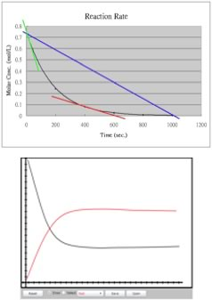

| Chapter 8.2: The idea of rate, introduced |
In science when we talk about a “rate” we
mean the change in a quantity over time. As (non-chemical) examples,
certain investments have an interest rate, which is the increase
in the principle over time (if the rate were to be negative, then
it was mean that the amount of principle would decrease over time,
not a good investment!) Similarly, the rate at which you travel down
the road (your speed) is given in miles per hour (or km/hr). A child
might grow at the rate of an inch or two per year (while the aged
can shrink), and some plants (like kudzu) can grow at the rate of
a inches per day. The units of rate are (an amount) divided by (a
period of time). While this might seem too obvious to dwell upon,
it is worth noting that most real processes do not have a constant
rate of change; rates themselves can, and do change – this
is one reason why the calculus is useful in chemistry, since it provides
the mathematical tools needed to deal with changing rates, like those
associated with planetary motions, falling bodies, and (it turns
out) chemical reactions. |
8.1 How for, how fast? |
|
Question to answer:
|
Reaction rates and probabilities Let us now step back and think about what has to happen for a reaction to occur. First, the reactants will have to be mixed together. The best way to make a homogeneous mixture is to form solutions, and it is true that many reactions take place in solution. When reactions do involve a solid, like the rusting of iron, the reactants interact with one another at a surface. To increase the probability of such a reaction, it is common to use a solid that is very finely divided, so that it has a large surface area, allowing the reactants more places to collide. We will begin a more in depth look at reaction rates with a simple hypothetical reaction that occurs slowly, but with a reasonable rate in solution. Our “toy” reaction will be A2 + B2 ↔ 2AB. Since the reaction is slow, that means that the loss of reactants (A2 + B2) and the production of product (AB) will also be slow, but measurable. |
 |
Over a reasonable period of time, the concentrations of A2, B2 and AB change significantly. If we were to watch the rate of the forward reaction (A2 + B2 ↔ 2AB), we would find that it begins to slow down. One way to visualize this is if we plot the concentration of a reactant versus time, we see that the relationship between them is not linear, but falls off gradually as time increases. We can get measures of rates at any given time by taking the slope of the tangent to the line at that instant, and as you can see these slopes decrease as time goes by. On the other hand, immediately after mixing A2 + B2, we would find that the back reaction (that is 2AB ↔ A2 + B2) is zero – because of course there is no AB around to react, at least initially. As the forward reaction proceeds, however, the concentration of AB increases, and the back reaction rate increases (as indicated by the slopes of the tangents to the curve). Interestingly, as the reaction proceeds, the concentration of both the reactants and products reach a point where they do not change any further. |
Question to answer:
Questions to ponder:
|
Let us now consider what is going on in molecular terms. For a reaction to occur (some of) the bonds holding the reactant molecules together must break, and new bond(s) must be formed to create the products. We can also think of forward and backward reactions in terms of probabilities. The forward reaction rate is determined by the probability that a collision between an A2 and a B2 molecule provides enough energy to break the A-A and B-B bonds, together with the probability of an AB molecule forming. The back reaction rate is determined by the probability that collisions (with surrounding molecules) will provide sufficient energy to break the A-B bond, together with the probability that the As and Bs released find other As and Bs to form A2 and B2 molecules. Remember, collisions are critical, since there are no “reactions at a distance”. What exact steps are involved in the forward and back reactions are not specified, but we can make a prediction - if these steps are unlikely to occur (low probability), the reactions will be slow. As the reaction proceeds, the forward reaction rate will decrease because the concentrations of A2 and B2 decrease, while the back reaction rate will increase, as the concentration of AB increases. At some point, the two reaction rates will be equal and opposite - this is the point of equilibrium. This point could occur at a high concentration of AB or a low one, depending upon the reaction. At the macroscopic level we recognize the equilibrium state by the fact that there are no further changes in the concentrations of reactants and products, but this is due to the huge numbers of molecules involved. |
It is important to understand that
at the molecular level, the reactions have not stopped. For this
reason we call the chemical equilibrium state - a dynamic equilibrium.
We should also point out that the word equilibrium is misleading
since in “everyday life” it is often used to mean
a state of rest. In chemical systems, nothing could be further
from the truth - even though there are no macroscopic changes
observable, molecules are still reacting. |
8.1
How for, how fast? |
Question to answer:
Questions to ponder:
|
| 28-Jun-2012 |